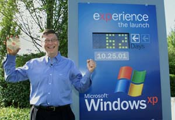

Windows XP was launched in October 2001 and was immediately to mixed reviews.
This was mostly because the interface had been overhauled compared previous versions of windows
in order to have a more user-friendly and
overall rounder look than previous versions.
This was not well received by regular Windows users, some even describing it as childish and looking like a toy.
Despite this Windows XP, due to its new user-friendly features allowing users to
interact easier and simpler than ever before
Windows XP overhauled the UI of previous windows OS;
it allowed the stacking of multiple windows in the taskbar
so that multiple open windows wouldn't crowd the taskbar.
It also Added a dialogue pop-up when an external device was connected, this can allow people to interact with a
helpful popup box,
rather than needing to navigate file browsers to find their external device.
However, there were downsides to windows XP, one of the most hated updates was Product activation.
This required people to use a one-time code to enable windows rather than installing the OS on any pc from a disc
